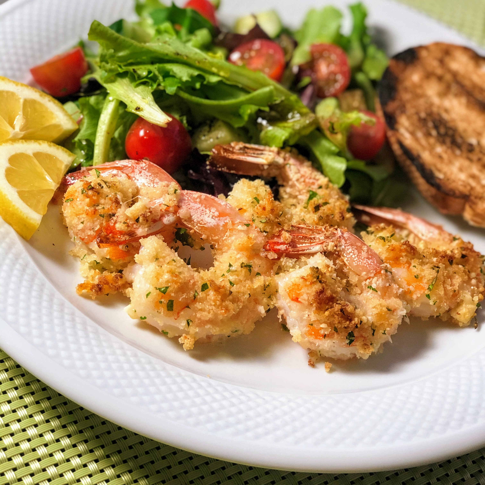

Garlic-Parmesan Shrimp

Delicious crispy shrimp coated in a bread crumb-Parmesan mixture.
family can't get enough of it! Serve with pasta and salad.
Ingredients
- nonstick cooking spray
- 1 cup dry bread crumbs
- 1 cup shredded Parmesan cheese
- 1,5 teaspoons garlic powder
- 1 pound large shrimp, peeled and deveined
- 2 tablespoons butter, melted, or more to taste
Steps
- Preheat the oven to 350 degrees F (175 degrees C). Spray a 9x13-inch glass casserole dish with nonstick cooking spray.
- Combine bread crumbs, Parmesan cheese, parsley, and garlic powder in a large resealable plastic bag. Seal and shake to mix ingredients together. Add shrimp and shake to coat.
- Lay shrimp flat in the prepared baking dish. Sprinkle with any bread crumb mixture remaining in the bag. Drizzle melted butter over the top.
- Bake in the preheated oven until starting to crisp, 15 to 20 minutes. Switch to broil setting until topping is light brown, 2 to 3 minutes.